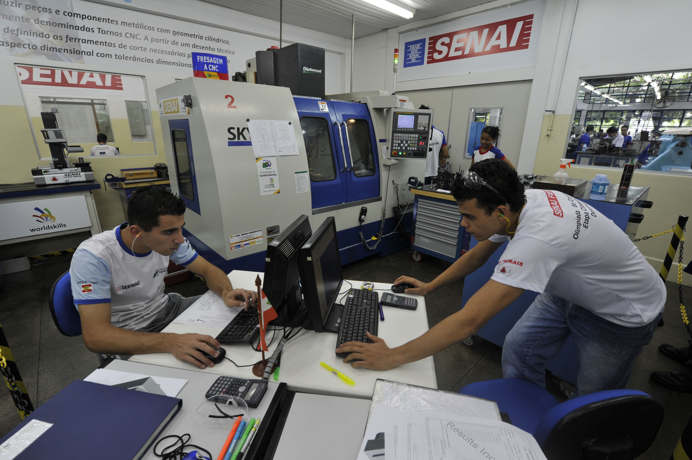
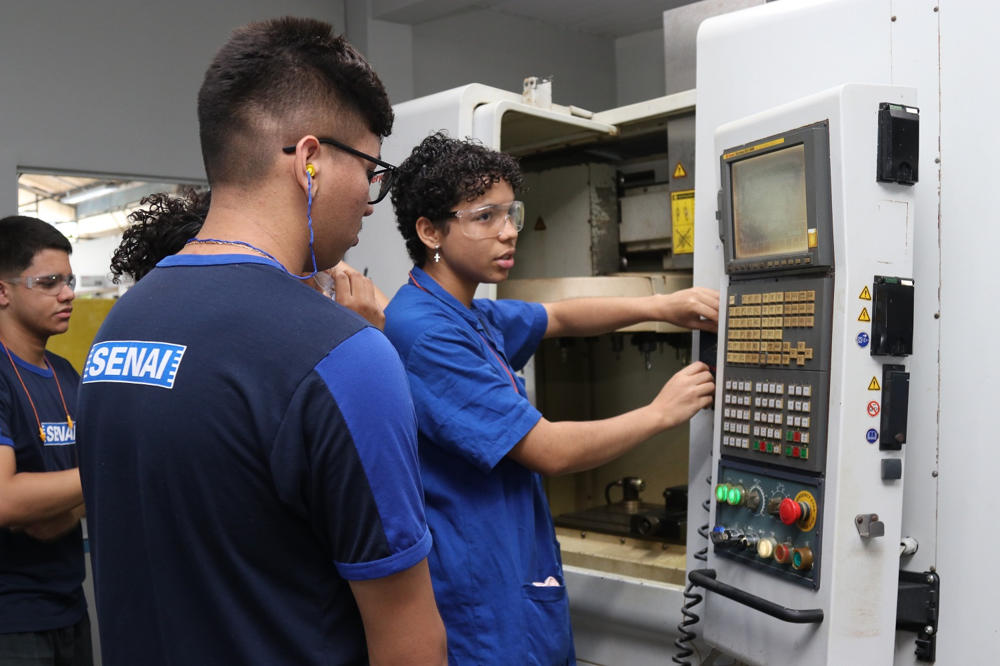
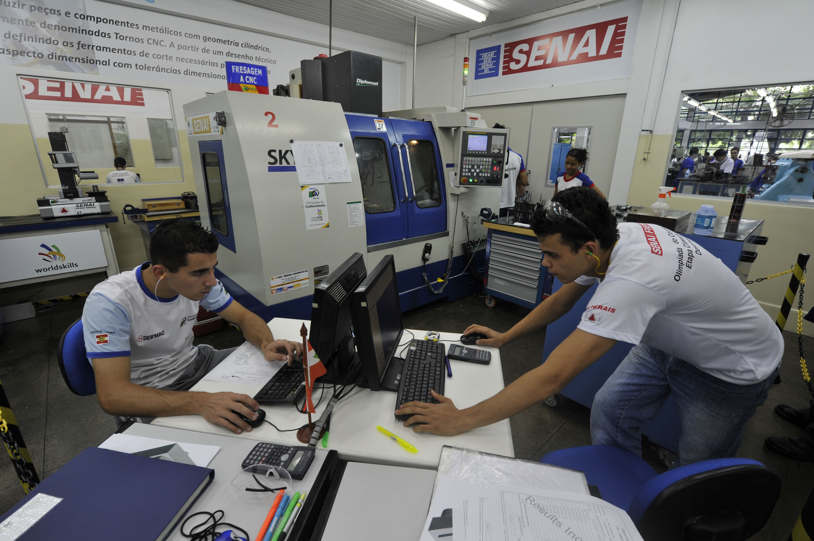
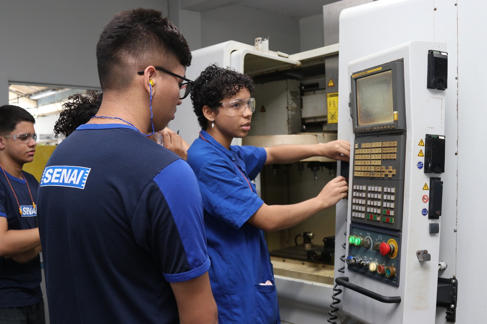
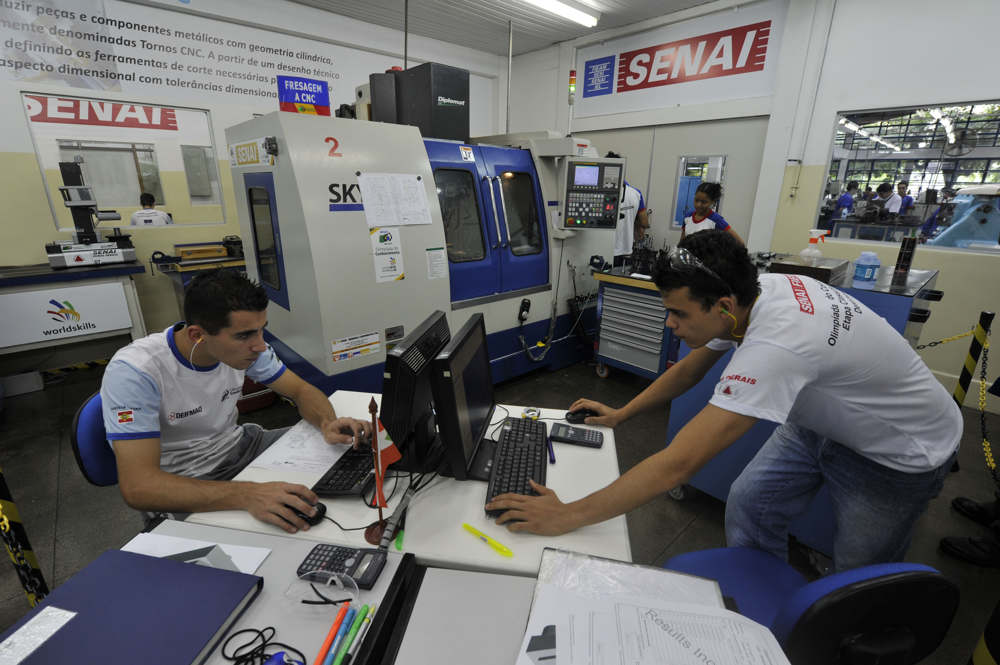
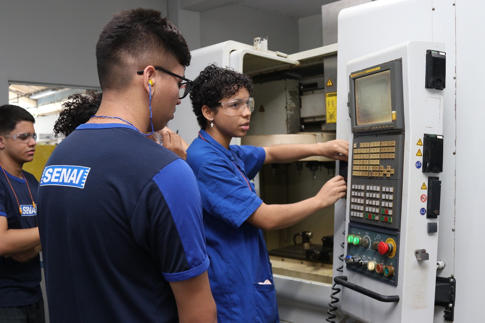

O SENAI Areias, localizado na cidade do Recife, em Pernambuco, é uma unidade de ensino voltada para a formação de profissionais altamente capacitados nas mais diversas áreas industriais. A unidade oferece uma ampla gama de cursos técnicos e de qualificação, com destaque para áreas como Eletromecânica, Automação Industrial, Informática, Edificações, entre outros. Com infraestrutura moderna, equipamentos de última geração e uma equipe de instrutores especializados, o SENAI Areias prepara seus alunos para os desafios do mercado de trabalho, oferecendo não apenas conhecimento teórico, mas também experiências práticas. A instituição também conta com parcerias com empresas do setor industrial, proporcionando aos alunos oportunidades reais de estágio e inserção profissional.


O SENAI oferece uma ampla variedade de cursos voltados para a formação profissional e técnica nas áreas da indústria e tecnologia. Com opções de cursos presenciais, semipresenciais e a distância, o SENAI atende jovens e adultos que buscam qualificação para entrar no mercado de trabalho ou se atualizar na carreira. Os cursos abrangem áreas como mecânica, eletrônica, construção civil, informática, moda, alimentos, logística, entre outras. Reconhecido pela qualidade do ensino e pela forte conexão com as demandas do setor industrial, o SENAI é uma das principais portas de entrada para quem deseja se destacar profissionalmente no Brasil.
Cursos como Gestão de Projetos, Recursos Humanos, Logística, entre outros.
Cursos como Edificações, Instalações, Obras, entre outros.
Cursos como Técnico em Segurança do Trabalho, Segurança e Higiene, entre outros.
Cursos como Eletrotécnica, Mecatrônica, Sistemas de Automação, entre outros.
Cursos como Análise e Desenvolvimento de Sistemas, Ciência de Dados, Segurança Cibernética, entre outros.